Skin problems (new)
{kind=link}
Domestic animals are often afflicted with various skin problems, some easy to cure others more complicated, and some even highly contagious to the human handlers.
The effect of skin problems on animal productivity also varies from mild irritations to rapid death, with all kinds of in between stages affecting the productivity and comfort of the animals. It really pays to pay close attention to the health and comfort of domestic animals.
Bovine Farcy
Mode of spread
It appears initially as small nodules under the skin, most often on the legs and on the neck, at the base of or near the ears. The nodules develop slowly, and some are grouped together in the form of a large mulberry. They are firm and painless. Infection slowly extends along the lymphatic vessels, which become prominent and corded, and along them more nodules may arise, together with the enlargement of the regional lymph nodes. Neither the nodules nor the lymph nodes show any tendency to rupture despite the latter sometime attaining the size of a large coconut. Swellings may persist for years with no apparent adverse effect on the health of the animal.
Diagnosis
Treatment
Cutting of the abscesses and the release of pus is of no value. Antibiotics likewise have no effect on the course of the disease.
- Sporadic cases should be isolated and more severe cases slaughtered.
- Attention should be paid to tick and fly control, by regular spraying or dipping, with especial attention being paid to Amblyomma species of tick.
- Cattle should be moved out of thick, thorny vegetation, which can cause minor skin wounds and allow entry of infection.
- All minor skin wounds, from whatever cause, must be treated promptly and effectively.
- In some cases a slaughter/disposal policy may have to be implemented to effect control. A delay in implementing this may lead to a slow and inexorable spread throughout the herd.
Elephant Skin Disease (Besnoitiosis)
Mode of spread
Stage 1:
- About a week after infection, affected animals may have a high fever up to 41.67 degC
- They display photophobia (avoidance of direct sunlight)
- Odema (swelling) of the skin with warm painful swellings on the abdomen interfering with movement
- Lack of appetite, nasal discharge, diarrhoea and enlargement of superficial lymph nodes.
- Inflammation of the testicles and sterility may occur in bulls.
- Small cyst like structures may appear in the whites of the eyes. These are considered to be diagnostic.
- Up to 10% of affected animals die in the early stage.
Stage 2:
- Survivors develop a chronic disease in which the parasites are in cysts underneath the skin. These cysts contain thousands of parasites.
- The skin becomes hard, thickened and wrinkled and the hair may fall out.
- Denuded areas of skin become scurfy, cracked, secondarily infected and fly-blown.
- Death occurs in severe cases.
- Recovered animals remain permanent carriers of cysts which contain numerous parasites.
- Cysts may develop in the eyes.
- Chronic damage and calcification of the testicles may occur.
- Severely affected animals become emaciated and bulls permanently sterile.
- Goats have lumps in their ears and around the genitals. They have white patches on their eyes.
- Pregnant goats abort and many become infertile. New-born goats are weak and some die.
- Separate sick animals from healthy ones.
- Control flies and ticks
- A live tissue culture vaccine has been developed in South Africa which gives good results, although it does not prevent infection.
Treatment
Fly Strike
There are two types of Fly strike.
Mode of spread
Signs of Fly strike
- Affected animals become depressed, stand with their heads down, do not feed, and attempt to bite the infested areas.
- Sheep are restless, wriggle their tails continuously and move about from place to place.
- There may be an obvious smell.
- The wool may be lifted slightly above the surrounding wool.
- The affected wool is moist and usually brown in colour.
- In the early stages larvae may be found in pockets in the wool before they have reached the skin.
Treatment
Horn Cancer
- The earliest sign is a slight drooping of the horn at its base. This deformity increases until the horn bends downwards and becomes loose. It then becomes detached from the skin at the base, exposing the horn core
- A grey/yellow lump can be seen at the base of the horn. It is covered with blood and mucus; it smells bad and is often infected
- The cancer has cauliflower-like growths covered in foul-smelling blood -stained discharge
- It may invade the frontal sinuses causing discharges with pus from the nose
- Often there is involvement of the eye, with cloudiness of the eye
- The cancer may spread inside the animal to other parts of the body. If left untreated, the animal becomes distressed and unhealthy
- Bacterial infection or Blowfly Strike may be complications
- Early cases may respond to surgical removal provided there has been no invasion of internal organs
- Irrigation of the frontal sinus with acid-pepsin solution may be advantageous
- Dehorning of young long-horned animals, particularly those with a familial history of horn cancer, is probably the most reliable measures
Lumpy Skin Disease (LSD) and Pseudo-lumpy Skin Disease (PLSD)
| 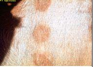 |
| Early skin lesions |
| (c) F. Glynn Davies Reproduced from the Animal Health and Production Compendium, 2007 Edition. CAB International, Wallingford, UK, 2007.
|
 |
| Late skin lesions |
| (c) F. Glynn Davies Reproduced from the Animal Health and Production Compendium, 2007 Edition. CAB International, Wallingford, UK, 2007.
|
| 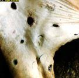 |
| Healing skin lesions |
| (c) F. Glynn Davies Reproduced from the Animal Health and Production Compendium, 2007 Edition. CAB International, Wallingford, UK, 2007.
|
| 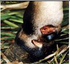 |
|
|
| (c) F. Glynn Davies Reproduced from the Animal Health and Production Compendium, 2007 Edition. CAB International, Wallingford, UK, 2007.
|
| 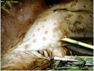 |
| Lesions on the udder |
| (c) F. Glynn Davies Reproduced from the Animal Health and Production Compendium, 2007 Edition. CAB International, Wallingford, UK, 2007.
|
| 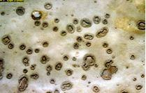 |
| Damaged hide after tanning |
| (c) F. Glynn Davies Reproduced from the Animal Health and Production Compendium, 2007 Edition. CAB International, Wallingford, UK, 2007.
|
- Animals may salivate profusely. A clear discharge comes from the eyes and nose. Later the discharge from the nose becomes grayish/white.
- The cattle are weak and tired and stop eating. They have a fever that sometimes goes down after 1 - 2 days but it goes up again. Animals produce little milk and pregnant cattle often abort.
- Lumps appear on the body, usually around the head and neck, under the abdomen, on the legs, or around the genitals and the udder. Sometimes the whole body is covered in lumps.
- The lumps are hard and usually all are about the same size- from 0.5 to 5.0 cms in diameter. The hair on the lumps stands up. The lumps are located within the skin and are firm, raised, round and flattened. Softer, yellowish/grey lumps may appear on the mouth. They rub off easily leaving sore red patches.
- The lymph nodes enlarge and sometimes a leg swells with persistent, painful oedema, accompanied by sloughing of the skin, leaving a large, open suppurating wound. Scars may be left which damage the hide. Healing may take several weeks, and hardened lumps may remain.
- The nodules dry and slowly begin to separate from the surrounding skin, finally sloughing, leaving an unsightly ulcer, which slowly heals, leaving behind a damaging scar.
- Adult cattle do not usually die but they may take months to recover and a few of them become very thin.
- Young calves often die.
- Occasionally the disease is very mild; animals only have a low fever and lumps in the skin that heal in about six weeks.
- Sometimes nodules spread to the upper respiratory tract, causing difficulty in breathing, and death within 10 days.
- Sometimes many animals are affected, sometimes only a few. Of those affected, some animals are very ill and may die. Others are only mildly ill. Yet others may take a long time to recover, and remain in poor condition for weeks. Pregnant cows may abort.
- PLSD, like true LSD, causes circular or oval plaques in the skin that are about 1cm in diameter, are hard and firm and have a red edge.
- Over the next few days the plaques enlarge to a diameter of 3-5cm. Their centres are depressed, discharge and form a thin brown crust.
- The skin beneath the crust dies and peels off 2 weeks later, leaving a bald patch of new skin covered with fine, grey scales. New hair covers the area within 2 months
- The number of plaques ranges from a few to many and they may be found anywhere on the skin, but mostly on the face, neck, back and perineum.
LSD Mode of spread
Recommended treatment
Mange
| 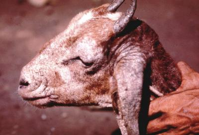 |
| Goat with Sarcoptes mange |
| (c) R. Paul Kitching
|
Mange is a well known skin disease of man and animals. The lead symptom in livestock is chronic itching, which can be so intense that animals reduce their feed intake and loose body condition. Some forms of mange can be transmitted from livestock to people.
Mange has a lot of local names in East Africa: Lpepedo, (Samburu); Emitina, (Turkana); Adho, Chitto, Addha (Somali); Haddo (Rendille); Simpirion (Pokot).
Definition
A parasitic skin disease, caused by different species of parasitic mites.
Cause
Microscopically small mange mites that live in the outermost layers of the skin and cannot be seen with the naked eye. Most are host specific, while some are shared between different species of animals. The mites feed on the surface or burrow just beneath the skin, making tiny tunnels. They cause intense irritation and itching.
Mode of infection / spread
The mites are spread through close direct contact between infected and clean animals (e.g. inside the stable, in a paddock, in a Boma). Especially in cool and wet conditions, the mites can survive for some time in dead skin scabs shed by affected animals. Objects contaminated by such scabs can also spread the mites, e.g. fence posts and tree stems on which animals like to rub, brushes or saddles used for several animals.
Signs and Lesions
Infested animals rub and scratch continuously (other skin diseases do not cause permanent itching!) and develop patches of inflamed skin where the hair is falling out and which later are covered by dry crusts. Sarcoptes mites are usually found on the neck, on the legs and the loin area next to the tail. For location of mites on the body see table below. Mange disturbs the animals, seriously reduces feeding time and causes loss in condition and reduced production. It also weakens animals and makes them more susceptible to other diseases.
| 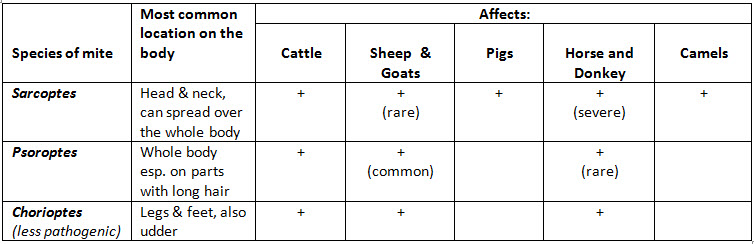 |
| Mange table (species of mite affects livestock) |
Treatment
The most efficient treatment is acaricide dipping (e.g. Amitraz) or spraying acaricide with a knapsack or injection of Ivermectin 1%. When using a knapsack spraying must be done thoroughly such that the whole skin surface is reached by the acaricide, including the head and inside of the ears. Always carry out two treatments 10-14 days apart (for camel 8 days apart), otherwise the mange will come back. All animals, including small calves/lambs/kids, must be treated together on the same day.
It is important to avoid spraying directly into the animal's noses and open eyes. Animals can go blind from getting acaricides into their eyes, and can get poisoned by too much acaricide sprayed on their noses.
In between the two treatments it is important to wash animals with a detergent and in particular rub off all dead skin scabs (with a brush); stables must also be cleaned and treated with acaricide; move animals to a clean fresh boma.
Treat early: chronic mange is very difficult and more costly to treat and often requires more than two treatments.
Note: because of very long withdrawal period Ivermectin should not be used in lactating animals!
Prevention
Before introducing new animals into a clean herd examine for skin lesions and observe their behaviour (itching!). Mange is very expensive to treat, so don't let it enter your herd!
Orf
| 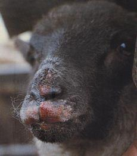 |
| Orf Symptoms |
| (c) Hugh Cran, Nakuru, Kenya
|
Local names: Gabbra: abdara gala / Samburu: abturo / Somali Ethiopia: afdhalow /
Common names: contagious pustular dermatitis
Description: Viral skin disease
| WARNING: Notifiable disease! If you suspect an animal has Orf, you must inform the authorities immediately. |
Mode of spread
| 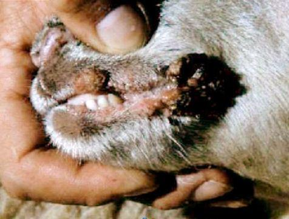 |
| Orf lesion |
| (c) R. Paul Kitching
|
- The first wounds develop at the corners of the mouth, from here spreading onto the muzzle and nostrils and, to a lesser extent, into the mouth
- Occasionally wounds are found on the feet, usually between the toes or around the coronet
- Ewes nursing infected lambs may develop wounds on the udder and the teat may become encrusted with multiple wounds
- The wounds start as small pimples and progress pus-filled wounds before encrusting. Several small wounds may join together to form large scabs
- The scabs often split and are sore to the touch. They crumble easily but are difficult to remove from the underlying granulation
- Affected lambs suffer a severe setback because of restricted suckling and grazing
- During the course of the disease - 1-4 weeks- the scabs drop off and the tissues heal without scarring
- Lesions may also develop at castration and docking sites, and on the crown of the head of hornless rams due to head butting.
Diagnosis
Treatment
Photosensitization
| 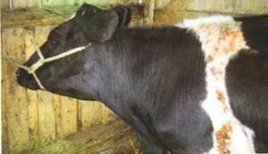 |
| Photosensitization |
| (c) William Ayako, Kari Naivasha
|
| 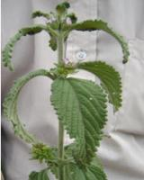 |
| Lantana Plant |
| (c) William Ayako, Kari Naivasha
|
Photosensitization also occurs as a result of poisoning or infections which damage the liver. Infections include Leptospirosis in which the initial infection is in many cases followed by severe jaundice and photosensitization.
- Only pale areas not covered by a heavy coat of hair or wool are affected. Light on these sensitive areas causes swelling and intense irritation. The difference between affected and normal skin is usually very marked. Black skin is unaffected while white skin is targeted. Loss of skin is common in the terminal stages.
- The skin wounds are most common in those areas exposed to solar rays, such as the back, the flanks, nose, the vulva and the teats.
- Often the first sign is a cow stamping her feet in discomfort. The teats appear reddish and are very tender. The muzzle and vulva may appear to be swollen and peeling.
- White skin may feel dry and have the feeling of parchment while adjacent black skin feels smooth and soft.
- Affected animals seek shade and may rub the affected parts on bushes and posts.
- With time the affected skin dies, dries and peels off. It should never be pulled off.
- Usually affected animals are not ill, although on occasion they can be, depending on the cause of the photosensitization.
- If there is severe liver damage the mucous membranes may sometimes become yellow.
Prevention - Control - Treatment
- General treatment includes immediate removal from direct sunlight, removal from the paddock in which the animals have been grazing and the administration of laxatives such as liquid paraffin to eliminate toxic materials already eaten.
- Some plants are only poisonous at certain times and the pasture may be safe to return to later in the year.
- Remove known poisonous plants in pastures by digging or burning out.
Pox Diseases
| 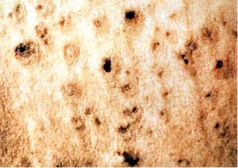 |
| Dried skin lesion |
| (c) USDA
|
Most pox diseases occur in Africa and Asia. Sheep and goat pox occurs in Africa north of the equator and in Asia.
| 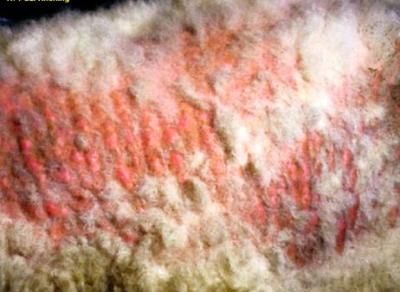 |
| Sheep Pox |
| (c) R. Paul Kitching
|
Mode of spread
- Cattle become sick 5 - 10 days after they get infected
- They have small red sores on the teats at places where there are small injuries. The sores soon have scabs over them. When the scabs fall off they leave a crescent of smaller scabs.
- The teats become rough with many grayish/yellowish scabs.
- In cats a single pock is followed by the appearance of multiple widespread wounds
- Animals usually recover in 2 - 8 weeks.
is a common, mild infection of the udder and teats of cows and occurs worldwide. Other names for Pseudo-Cow Pox include Bovine Papular Stomatis (BPS) and Milkers' Nodules.
| ATTENTION: Human beings can be infected with BPS and the disease in humans is called Milkers' Nodules. |
Pseudo-Cow Pox mode of spread
- Lesions begin as small, red pimples on the teats or udder. These may be followed rapidly by scabbing or small blisters may develop before scabs form.
- Scabs may be abundant but can be removed without causing pain.
- As the lesion begins to heal, it becomes raised, healing from the centre, and leaves a circular ring of small scabs. This stage is reached in 7-12 days.
- Some wounds persist for several months giving the affected teats a rough feel and appearance. There is little immunity and the disease tends to recur. It spreads slowly, heals slowly, recurs cyclically in individual cows, and in herds the disease can last for up to 18 months.
- Calves show signs 3-7 days after they are infected
- The pimples increase in size daily until they are 1-2cm in diameter.
- The initial wounds persist for 3-4 weeks and then heal quickly, to be followed by new wounds 1-3 weeks after the onset of the first ones.
- The wounds expand, forming circles of different colours - yellow, grey and red.
- As old wounds heal, new ones may form, so the disease may be protracted for months.
- Animals are not ill and the disease is not fatal.
- Occasionally the tip of the tail may be affected, leaving a raw, denuded area. Infected animals are chronically unthrifty and are usually culled. The condition is called 'Rat Tail Syndrome'.
- Infected animals should be segregated. Avoid moving infected animals to areas without the disease.
- Individual paper towels should be used for washing udders.
- Back-flush milking clusters to reduce cross-infection
- Newly purchased cattle should be quarantined for at least 14 days and their teats carefully inspected for evidence of infection.
- Control by vaccination has been attempted but is of doubtful value.
- Avoid using anything that has touched infected animals.
- Make sure that newborn animals drink enough colostrum.
- Those people who milk infected animals should not milk healthy ones. It is best not to drink milk from infected animals.
Recommended treatment
- Only treatment of symptoms without curing the disease is possible. The application of a soft cream before milking and an astringent lotion after milking facilitates recovery. Hands and cloths should be disinfected.
- If the sores are bad or deep put antibiotic or antiseptic on them. Be careful not to spread the disease further. Use wound dressings that dry.
A vaccine for camel pox exist, but has so far been too expensive to import to Kenya.
| 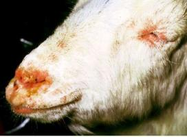 |
| Goat Pox |
| (c) R. Paul Kitching
|
| 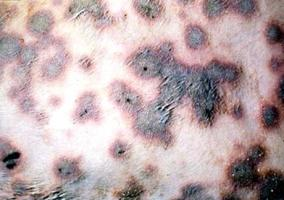 |
| Grey lesions of skin of goat |
| (c) USDA
|
Live, attenuated virus vaccines give good immunity.
Ringworm
Mode of spread
- Animals develop symptoms of ringworm 7 - 28 days after infection.
- Animals have a circular scab on the skin about 3 cm across. Scabs usually appear first around the nose, above and around the eyes, on the ears or under the tail. The skin under the dry scab is wet. Scabs soon join together and become thicker.
- After several days the scabs fall off. The skin underneath becomes dry with a heavy, gray-white crust raised above the skin.
- Animals do not scratch when they have ringworm. But they sometimes scratch if bacteria infect the scabs.
- The scabs fall off after a few weeks and leave patches with no hair.
- Animals slowly recover even without treatment. The hair grows back in about three months.
- Isolate and treat animals with ringworm
- Failure to control an outbreak of ringworm is usually due to the widespread contamination of the environment before treatment is attempted.
- Use disinfectants to clean contaminated places and equipment before using them for healthy animals. Direct sunlight kills ringworm fungi.
- An attenuated fungal vaccine is available in some European countries and it has prevented the development of severe clinical lesions and greatly reduced the incidence of zoonotic disease in animal care workers. But vaccinated animals continue to shed spores for some time after vaccination and it is expensive.
- Animals that recover from ringworm do not usually get the disease again.
Treatment
- Shave the hair around the place with ringworm. Burn the hair you have shaved off because it is infected.
- Scrape the scabs off gently using soapy water and a brush.
- Put antiseptic on the affected areas. Betadine povidone- iodine, Whitfield's ointment and chlorhexadine are effective. Animals treated like this can recover in 2 - 3 weeks.
- Give griseofulvin by mouth or apply to the affected area. Individual animals can be treated with miconazole or clotrimazole lotions. These medicines are expensive but animals treated with them start to recover in about 10 days
- Kipsigis (cattle): Crush a handful of Mexican marigold (stem, leaves and flowers) with a stone so the juice comes out. Collect the juice and rub on the affected spots once a day for 3 days.
- Luo (camels, cattle, donkeys, goats, sheep): Pound a handful of Otange leaves to powder and mix with half a cup of ghee. Smear on the affected skin until the patches disappear.
(Source: ITDG and IIRR, 1996)
Skin Tumours and Warts
| 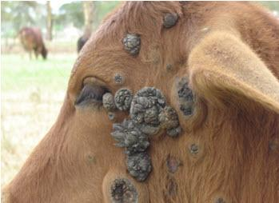 |
| Benign tumours |
| (c) William Ayako, Kari Naivasha
|
All domestic animals can get skin tumours. Humans are not affected by skin tumours from animals. Some viruses e.g. the papilloma virus, may cause skin tumours.
There are two types of skin tumours: benign (warts) and malignant (skin cancer). Benign tumours are not life-threatening, do not spread to other areas of the body and either regress or are amenable to treatment and generally grow slowly. Malignant tumours can be life-threatening, grow quickly, can spread to other organs or tissues and may be difficult to treat.
Mode of spread of Warts
- Hard lumps on the skin that are not hot are often tumours. These lumps may grow slowly, in which case they may be benign. If they grow fast they are probably malignant. Sometimes the skin over a tumour is injured and the lump has open sores on it. If this is the case the tumour is most probably malignant. It is better to get a professional to examine it early than to wait until it is too late to do anything about it.
- There is no known treatment for most tumours. Some tumours do not spread to other parts of the body (these are the benign tumours). Skilled veterinarians sometimes remove benign tumours. Some tumours spread to other parts of the body (these are the malignant tumours). It is not worth operating to remove these because they come back in other parts of the body.
- Infectious papillomatosis disappears on its own, although the duration of warts varies considerably. A variety of treatments has been advocated without agreement on efficacy. Surgical removal by a vet is recommended if the warts are sufficiently objectionable. However, because surgery in the early growing stage of warts may lead to recurrence and stimulation of growth they should be removed when near their maximum size.
- Affected animals may be isolated from others likely to be infected, but with the long incubation period many are likely to have been exposed before the problem is recognized.
- Vaccines are of some value for prevention but are of little value in treating cattle that already have lesions. Because wart viruses are mostly species specific there is no merit in using a vaccine derived from one species in another.
- When the disease is a herd problem it can be controlled by vaccination with a suspension of ground up wart tissue in which the virus has been killed by formalin. An autogenous vaccine i.e. one derived from animals in the affected herd, may be more effective than a commercial one.
- The best action is to do nothing yourself, but call a veterinarian to assess the problem. Trying to treat a tumour without knowing its type may lead to disaster! Leave well alone and call a vet.
Worm Nodules Disease
- Clinical signs are minimal, consisting of nodules up to 3cm in diameter under the skin and internally. In cattle skin nodules are found in the brisket, lower limbs and ligaments of the neck whereas in horses they are found in the ligaments of the neck and lower limbs.
- Animals have small lumps (called nodules) just under the skin. The lumps are full of worms and worm larvae.
- Cattle usually have lumps on the legs, around the genitals, on the neck and between the front legs.
Diagnosis
- Ivermectin works well against the microfilariae. Other medicines are less effective.
- Control of the vectors is usually impracticable.
.
Wounds and Abscesses
What to do about Wounds
Prevention of infection
All harmful influences must be avoided during and after treatment.
2. Spirit
3. Dettol (stings) - dilute
4. Savlon (painless) - dilute
5. Iodine (minor stinging) - according to recommendation on bottle
6. Potassium permanganate - dissolve granules in water
7. Epsom salt - dissolve in warm water
8. Table salt (less effective) - dissolve in warm water
9. Warm Soap water
10. Magadi soda (mostly used to treat wounds from Foot and Mouth disease)
Bleeding wounds
Large gaping wounds
Puncture wounds:
Closed wounds:
Abscesses
Abscesses are usually hot and painful when touched, whereas ruptures, hernias, tumours, haematomas and cysts are normally non-painful. Hernias and ruptures usually occur below the belly and may contain internal organs such as a loop of intestine. Cutting a swelling like this could be disastrous. So check and think before taking action, by feeling the swelling carefully. A hernia or rupture is usually soft and can be pushed back into the body and is usually situated on the body wall.
In order to confirm that the swelling is an abscess a sterile needle should be carefully pushed through the skin into the swelling after first shaving the overlying skin and applying spirit or antiseptic to the site of the insertion. If the swelling is an abscess then pus will appear in the hub of the needle. If a cyst there may be clear fluid, if a haematoma serum, if a tumour then possibly nothing may appear.
Treatment of abcesses
Skin Symptoms as Signs of other Diseases
| 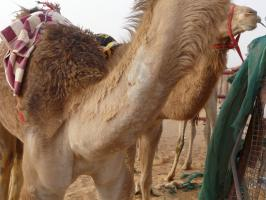 | 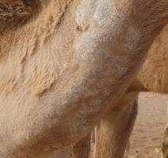 |
| Mange on neck of a camel | Detail of mange on neck of camel |
| (c) Dr Bernard Faye
| (c) Dr Bernard Faye |
- Skin lesions on head, neck and shoulders with loss of hair and formation of white crust patches which are very itchy: See:
- Swollen lips with cracks that form scabs around the mouth of kids and lambs:
- Many lumps in a line along the legs:
- Dry skin, black area high on the leg with crackling sound when handled: See: Black Quarter (under construction)
- Blisters in cow's mouth and sores between the cow's toes; blisters in the teats: See Foot and Mouth Disease
- Profuse, moist eczema and hyperemia of skin and visible mucus membranes; matted hair and tips of ears; tail sloughing off: Sweating Sickness
Review Process
1. William Ayako, KARI Naivasha. Aug - Dec 2009
2. Hugh Cran , Practicing Veterinarian Nakuru. March - Oct 2010
3. Review workshop team. Nov 2 - 5, 2010
4. Addition of Wounds and Abcesses Oct 2011 by Dr Hugh Cran
5. 2013 Insertion of Mange by Dr Mario Younan (DVM, PhD), Regional Technical Advisor for VSF-Germany, working in East Africa since 1995
- For Infonet: Anne, Dr Hugh Cran
- For KARI: Dr Mario Younan KARI/KASAL, William Ayako - Animal scientist, KARI Naivasha
- For DVS: Dr Josphat Muema - Dvo Isiolo, Dr Charity Nguyo - Kabete Extension Division, Mr Patrick Muthui - Senior Livestock Health Assistant Isiolo, Ms Emmah Njeri Njoroge - Senior Livestock Health Assistant Machakos
- Pastoralists: Dr Ezra Saitoti Kotonto - Private practitioner, Abdi Gollo H.O.D. Segera Ranch
- Farmers: Benson Chege Kuria and Francis Maina Gilgil and John Mutisya Machakos
- Language and format: Carol Gachiengo
Information Source Links
- Barber, J., Wood, D.J. (1976) Livestock management for East Africa: Edwar Arnold (Publishers) Ltd 25 Hill Street London WIX 8LL. ISBN: 071310063X
- Bayer Leverkusen: Handbook for Farmers Stock Diseases. Germany Veterinary Dept
- Blood, D.C., Radostits, O.M. and Henderson, J.A. (1983) Veterinary Medicine - A textbook of the Diseases of Cattle, Sheep, Goats and Horses. Sixth Edition - Bailliere Tindall London. ISBN: 0702012866
- Blowey, R.W. (1986). A Veterinary book for dairy farmers: Farming press limited Wharfedale road, Ipswich, Suffolk IPI 4LG
- Force, B. (1999). Where there is no Vet. CTA, Wageningen, The Netherlands. ISBN 978-0333-58899-4.
- Hadrill David 2002: Horse Healthcare A Manual for Animal Health Workers and Owners ITDG Publishing ISBN 1 85339 486 6
- Hall, H.T.B. (1985). Diseases and parasites of Livestock in the tropics. Second Edition. Longman Group UK. ISBN 0582775140
- Hunter, A. (1996). Animal health: General principles. Volume 1 (Tropical Agriculturalist) - Macmillan Education Press. ISBN: 0333612027
- Hunter, A. (1996). Animal health: Specific Diseases. Volume 2 (Tropical Agriculturalist) - Macmillan Education Press. ISBN:0-333-57360-9
- ITDG and IIRR (1996). Ethnoveterinary medicine in Kenya: A field manual of traditional animal health care practices. Intermediate Technology Development Group and International Institute of Rural Reconstruction, Nairobi, Kenya. ISBN 9966-9606-2-7.
- M.M.H. Sewell and D.W. Brocklesby (Editors). Handbook on Animal Diseases in the Tropics, 4th ed. Balliere Tindall, London.
- Mackenzie & Simpson 1967: The African Veterinary Handbook Pitman Nairobi
- Merck Veterinary Manual 9th Edition
- Pagot, J. (1992). Animal Production in the Tropics and Subtropics. MacMillan Education Limited London. ISBN 0-333-53818-8
- The Organic Farmer magazine No. 50 July 2009